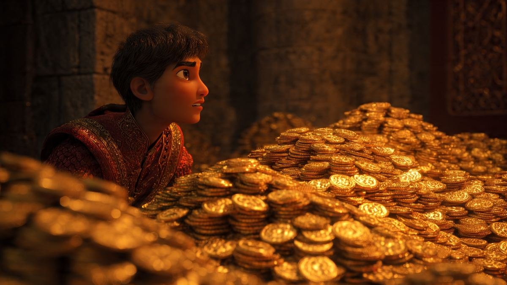

A three-part story about revenge, revelation and the cost of power. The setting and prologue are open below; the three books and plot twists are locked behind a deliberate spoiler seal.
THE SETTING
A world between eras.
Ancient dynasties rule alongside modern military technology. The great powers of Russia and Mahishmati shape the global order, while Dholapur, Lyari and Amricapuri are drawn into conflicts that reach far beyond their borders.
At the center is Momo, an exiled strategist whose journey changes the fate of kingdoms — and eventually the identity of the person the world believes him to be.

GEOPOLITICAL WORLD SETTING
OPEN ARCHIVE · CANONICAL INTRO
PROLOGUE: THE ASHES OF LOYALTY
“In a world where ancient dynasties rule with ballistic missiles and medieval blades clash beneath the rotors of attack helicopters, power is the only currency that matters.”
For centuries, the global order has been dominated by two titans: the freezing, hyper-militarized empire of Russia, led by the unstoppable Vladiveer Protien, and the golden, ancient juggernaut of Mahishmati, ruled by the iron hand of Rajmata Melody and guarded by the legendary warrior Shamshendra Mahabali. Beneath them lie smaller kingdoms like Dholapur, the underworld dens of Lyari, and the newly risen, tyrannical superpower of Amricapuri.
Before our story begins, Dholapur bled. When the ancient, demonic entity known as Keerpada attacked the kingdom, Dholapur’s greatest champion, Bheem, fell in a brutal bloodbath. Bheem had loved Princess Indu Kumari—daughter of Raja Indra Sharma—with his very soul.
Yet, before Bheem's ashes could even grow cold, a brilliant, exiled strategist from Mahishmati named Momo stepped into the breach. Alongside his old friend Mota Bhai—a master of forbidden dark rituals—Momo bound and captured Keerpada, saving Dholapur.
Rewarded with power and prestige, Momo married Indu Kumari. For all of Bheem’s legendary devotion, loyalty proved to be nothing more than a piece of cake—easily devoured by whoever held the sharpest knife.
RULER: RAJMATA MELODY
Kingdom of Mahishmati
The ancient golden juggernaut possessing vast gold reserves and formidable siege engines.
RULER: THUMPASUR (THUMPA)
Superpower of Amricapuri
A tyrannical industrial superpower built on armored tank columns and clandestine black-sites.
RULER: VLADIVEER PROTIEN
Freezing Empire of Russia
A hyper-militarized northern titan commanding supersonic intercontinental ballistic missiles.
RULER: JAMEEN UDADI
Underworld of Lyari
Lawless smoke-filled slums housing the world's premier covert intelligence network.
RULER: RAJA INDRA / MOMO
Kingdom of Dholapur
A strategic kingdom where ancient parchment scrolls sit beside glowing holographic war maps.
RULER: MEDDY
Kalaka Borderlands
Fierce borderland forces locked in a generational struggle against the golden walls of Mahishmati.
SPOILER LOCK ACTIVE — BOOKS I, II & III SEALED
CLASSIFIED TRILOGY ARCHIVES PROCEED ONLY BY CHOICE.
Spoiler warning: the summaries and full chapter scripts below reveal major plot twists, secret identities, betrayals, and the final endings across Book I (Revenge Ready), Book II (Reveal Beddy), and Book III (Business Shaddy).
Spoiler Archives Unlocked: Showing complete Book I, II & III story summaries and chapter breakdowns.
BOOK I / REVENGE READY
MISSION MEDDY: REVENGE READY
Momo's life in Dholapur collapses when an invasion led by Thumpasur — Thumpa — exposes betrayal inside his own household. Forced to flee, Momo returns to Mahishmati and reunites with Mota Bhai, an old friend whose knowledge of forbidden rituals offers a dangerous path against Thumpa's growing power.
An attempt to turn the ancient entity Keerpada against Thumpa goes disastrously wrong. Momo and Mota Bhai lose the safety they had found, and their search for allies leads them into Lyari's intelligence network, where they meet Jameen Udadi, Thumza Curry Madari and the unpredictable Pappu Pandey.
The struggle reaches the Arctic, where political alliances and military power collide. But the return of Keerpada changes the conflict completely. Momo becomes the vessel of a divine force and transforms Keerpada into a mysterious substance known as Notorius Metal — a victory that carries the seed of a new danger.
Chapter 1 · Dholapur Mansion
The Mole in the Mansion
Thumpasur's armada crosses the border. Sweeping through his estate, Momo discovers his wife Indu Kumari holding a bloody dagger over a dead guard at the transmitter. Unable to kill his own wife, Momo flees in his plane toward Mahishmati. Thumpasur arrives and shoots Indu dead on the spot: "Trash belongs in the dirt once it's empty."
INDU KUMARI: “You think a strategist can stand against an Asura? Power shifts, Momo. I'm just surviving.”
Chapter 2 · Mahishmati Suburbs
Flying Chappals and Forbidden Pacts
Momo reunites with Mota Bhai. Sneaking in past midnight, Mota Bhai's wife smacks him with a flying chappal before serving hot rotis. Over tea, Mota Bhai suggests waking Keerpada on the upcoming night of Amavasya to destroy Thumpa in Dholapur.
Chapter 3 · Ritual Grounds
The Night of Amavasya
The earth splits open and Keerpada rises, but his burning eyes lock onto Momo. Rushing back to evacuate, Keerpada's black tendrils grab Mota Bhai's wife and brutally execute her before their eyes. Momo holds a weeping Mota Bhai inside the car and escapes to Lyari.
Chapter 4 · Lyari & Hacksteam Island
The Underworld of Lyari
Momo meets spymaster Jameen Udadi and operative Thumza Curry Madari, who just burned Hacksteam Island to the ground to rescue his kidnapped sisters. Deep mole Pappu Pandey intercepts manifests showing Thumpa is holding Rajmata Melody at the North Pole.
Chapter 5 · Arctic Icefields
The Frozen Hell and The Missile Tsar
After enduring months of Arctic torture, Momo is broken out by Pappu Pandey dual-wielding silenced SMGs. Clashing with Thumpasur, Russian leader Vladiveer Protien rides an ICBM from the stratosphere, leaping off into a superhero three-point stance right before the warhead decimates Thumpa's army.
Chapter 6 · Glaciers
The Light of Twenty Thousand Suns
Keerpada arrives at the North Pole. Mota Bhai invokes the divine Anushthan; possessed by the Panjurli Daiva, Momo radiates with the light of 20,000 suns. Applying E = mc², Momo condenses Keerpada's dark energy into solid atomic matter: Notorius Metal.
BOOK II / REVEAL BEDDY
MISSION MEDDY: REVEAL BEDDY
Mahishmati is weakened, and the Kalaka forces threaten its survival. Thumpa is pulled into a desperate alliance as the kingdom faces a new enemy: Meddy, whose personal history reveals a long-planned campaign of revenge.
At the heart of the confrontation is a revelation about Momo's birth and identity. Rajmata Melody reveals that Momo is Manvendra Mahabali, the trueborn son of Shamshendra Mahabali, hidden in infancy to protect him from a succession plot.
Manvendra takes the throne, but the victory feast that follows exposes a darker truth: he knew far more about the unfolding events than anyone around him understood. Thumza begins to question the man he once fought beside.
Chapter 1 · Amricapuri Chamber
The Sweat of a Tyrant
Thumpa wakes from recurring nightmares of Momo's bone-chilling smile. His father mocks him, openly confessing that he murdered Shamshendra's wife years ago.
Chapter 2 · Subterranean Bunker
The Crippled Throne
With Mahishmati's defense below 10%, Momo wields his Notorius Metal sword, ordering Pappu Pandey to wiretap Thumpa's family while allowing the Kalakas to march into the courtyard.
Chapter 3 · Ruined Courtyard
The Nightmare Made Flesh
The gates fall exactly as in Thumpa's nightmare. The hooded commander Meddy—widow of Kaleshwar Saand—reveals she manipulated Keerpada and the court to destroy Mahishmati.
Chapter 4 · Throne Balcony
The True Heir and The Fake Martyr
Rajmata Melody reveals Momo is Manvendra Mahabali, true son of Shamshendra. Momo executes Meddy, Thumpasur, and his father in the mud, being crowned king while Rajmata proclaims Thumpa a fake martyr.
Chapter 5 · Palace Vaults
A Mere Sacrifice
At the secret victory feast, King Momo reveals he knew Meddy's identity all along and let the massacres happen so no one could challenge his rule. Thumza asks about the millions of innocent dead; Momo coldly replies: "Oh, it was just a mere sacrifice for the ultimate me."
THUMZA: “Wait... you could have stopped the war before it began? What about the millions of innocent people who died?”
BOOK III / BUSINESS SHADDY
MISSION MEDDY: BUSINESS SHADDY (BLOODY SHADDY)
Thumza investigates the Kalaka lands and discovers that the people branded as monsters have suffered generations of exploitation and environmental poisoning under Mahishmati's rule. His loyalty to the empire breaks, and he begins organizing a rebellion.
Jameen and Pappu eventually join the resistance. Momo, now increasingly corrupted by Notorius Metal, holds on to power with Mota Bhai at his side. The conflict becomes a struggle not simply for a throne, but over whether the old system should exist at all.
Thumza rejects the possibility of becoming the next ruler. His final confrontation with Manvendra ends with the destruction of the throne and Notorius Metal. The trilogy closes with the monarchy broken and the Kalaka people free to leave the poisoned territory.
Chapter 1 · Kalaka Wasteland
The Gospel of Radiation
Thumza discovers open uranium pits and chemical sludge. Mahishmati systematically poisoned Kalaka DNA for generations; their deformed speech was the result of radiation damage.
Chapter 2 · Rebel Encampment
The Shadow Rebellion
Thumza leads the resistance. Rajmata dies of old age in her sleep. Jameen Udadi and Pappu Pandey defect when Momo orders field operatives murdered to hide the royal biohazards.
Chapter 3 · Outer Sanctum
The Underdog Against the Gods
Thumza confronts Mota Bhai in a heartbreaking duel. With tears in his eyes, Thumza defeats the broken occultist, granting him peace at last.
Chapter 4 & Epilogue · Throne Room & Ashes
Beyond Moh Maya & The Broken Wheel
Facing God-King Momo, Thumza tackles him off the dais and drives an overloaded plasma detonator into Momo's Notorius Metal chestplate. White light consumes the throne, the metal, the king, and the spy. The Kalaka walk free into clean air. In the courtyard ashes, Jameen plants a rusted knife: "Here lies the man who fought for all, gave the ultimate sacrifice, and walked away from Moh Maya so his soul could never be corrupted."
THUMZA: “Your wine tasted like blood, Manvendra. Keep your throne.”
THE THEMATIC ARC
Revenge. Power. Freedom.
The trilogy begins with betrayal and a search for revenge. It then turns toward identity, ambition and the hidden cost of victory. Finally, it asks whether freedom can be achieved without simply replacing one ruler with another.